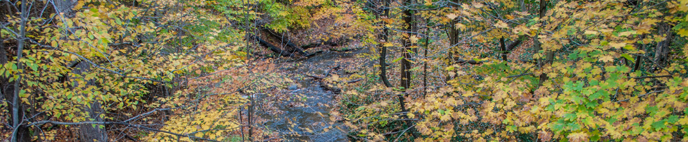

Contact Us
By Email
mail@woodsofplenty.com
By the Postal Service
Woods of Plenty
P.O. Box 289
Murrysville, PA 15668-0289
In Person (!)
Find us in the forest or:
March 12, 2016
-WOSA Forestry and Wildlife Conference
April 19-29, 2016
Forest Trail Enrichment in Warrington, PA.
Join us during any of these days on the trail heading South from Lower Nike Park for small group mini-courses on invasive plant identification, their impact on the native forest biosphere, and holistic forest management training!
April 30, 2016
-Warrington, PA Community Day
Join us on the trail heading south from Lower Nike Park for planting native fruit and nut producing species to increase food production and biodiversity!
Forest owner survey
Tell us about your forest.
Bring us to your local park!
Know of a forest you would like Woods of Plenty ™ to work in? Contact your local Environmental Advisory Council and encourage them to reach out!
Sponsor Woods of Plenty™
Creativity and Experience
Gavin Fiorina
Forest designer
gavin@woodsofplenty.com
A Certified Permaculture Designer with an MFA in Design, Gavin has set the standard for dynamic forest design.
In years past you would have found Gavin sitting in contemplation at the forest edge as he endeavored to reach a deeper understanding of the natural world. Growing up in the woods
Gavin was granted a sense of the delicate and brutal cycle of life. With help from the plants he loves Gavin wishes to bring you all the growth, health, and beauty the forest can offer.
His apprenticeship at an organic farm taught him the challenges of food production. He realizes now that if we want to have quality food we must start growing it ourselves.
Now a partner at Woods of Plenty, Gavin finds himself at the intersection of design, science, better living, the natural world and non-toxic food.
Jeff Lackey
Implementation engineer
jeff@woodsofplenty.com
Jeff received his BS in Electrical Engineering from Penn State UP in 2010 with a Certificate in Engineering and Community Engagement and a focus on horticulture.
After graduating, Jeff became a two-time Penn State Humanitarian Engineering and Social Entrepreneurship Fellow. He then attended Northwestern University where he earned his MS in Biomedical Engineering in 2014 with a Certificate in Global and Ecological Health Engineering. Jeff has implemented solar energy conversion systems, preventive healthcare systems, food preservation systems, invasive plant management systems, and agroforestry systems.
While his ventures have been diverse, his passion for the forest has been steadfast. Woods of Plenty is the crossroads of it all for him and he seeks to help you discover the most productive system on this planet: forests.
Steve Suffian
Life cycle analyst
Rob Lackey
Specialist
